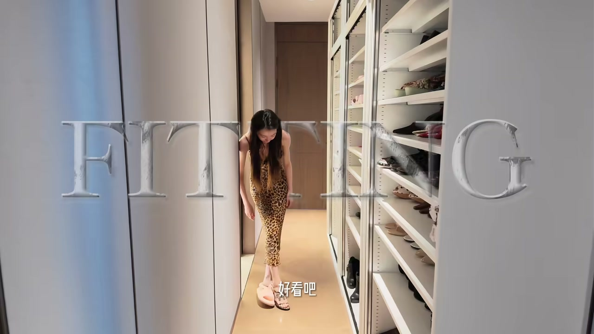
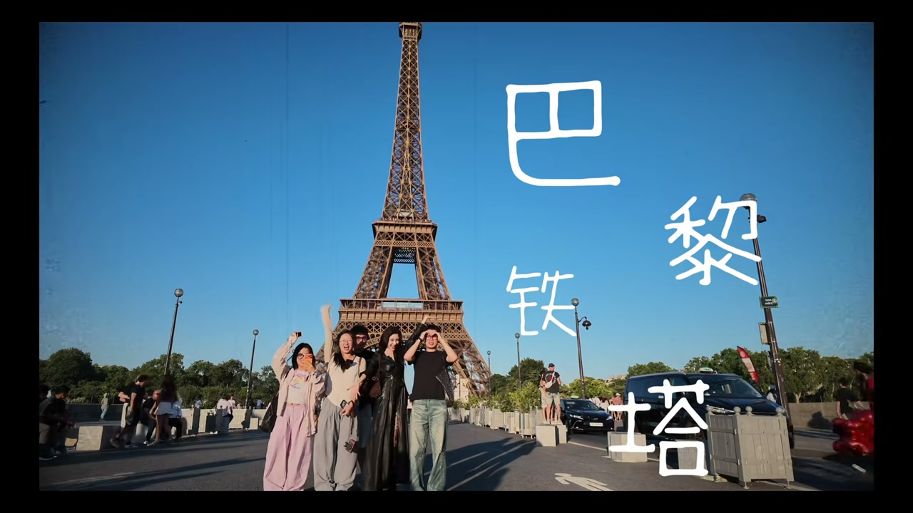
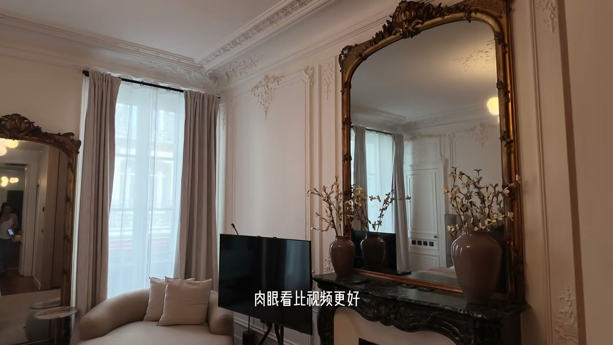

时装周：fitting 试衣 + 化妆间
00:55开场正在试衣服——“下半身感觉要进会议室开会了”，正好让豪哥看一下：“这一双”“现在这双”。
01:08现在晚上 6 点 16，下午 2 点多开始 fitting，差不多四个小时弄完衣服（中间休息了半个小时），然后去找化妆品和臂带绝发棒、磨脚贴等琐碎的东西——连皮带打孔的机器都会带。
01:24来到化妆间：地上的这些都是从剧组带回来的还没整理——总之就是一个“你让我买木”的状态。

入住三层民宿
02:42入住民宿：这个跟上总舟的螺很像，空气特别好，拍照肯定很好看，一共三层——房间很漂亮，还有很漂亮的厨房和卧室。
03:19第三天：已经结束所有的秀，今天是逛街日，换了新的民宿，超大卧室，外面也超美。
09:41又换民宿：“肉眼看比视频更好”，有空调好舒服。
泰菜 + 逛街
04:20天气真的很好，今天是休闲的一天——去吃泰菜（昨天吃饭被推荐的）：猪油渣很好吃（“你湖南人最喜欢吃的猪油渣”）、面很不错、爆筋大、“绝对正宗小米辣，这个好辣”。
09:56这家的香菜超级好吃——好好吃。
二十年的发小：妈妈们的闺蜜
05:40官方声明：我妈妈和他妈妈从初中开始就是闺蜜，当时两个闺蜜刚好一起怀孕，就说要不要一起生；三个闺蜜同一年生了三个宝宝——所以博主和豪哥从幼儿园小班、中班、大班都同一个班，小学也同一个班，高中三个人又在一个学校，后来一起北京、一起上海。
07:30两家人都拿对方当自己家孩子：外婆来照顾妈妈住了一年多，每天接放学；幼儿园时博主是“个子最小的那一个”，小时候还一起跳拉丁舞。
铁塔晒太阳
08:17来铁塔晒太阳：现在是巴黎时间 8 点 22 分——“这个船怎么那么大”“我的天哪太美了”。
09:17铁塔前拍照：“我也想来一个大的”“我好怕把你带到铁塔去”“哪有人在飞铁塔”——巴黎铁塔合影名场面。
10:11帽子购物：“这个娃娃超可爱”“姐买的”——买礼物收尾。

